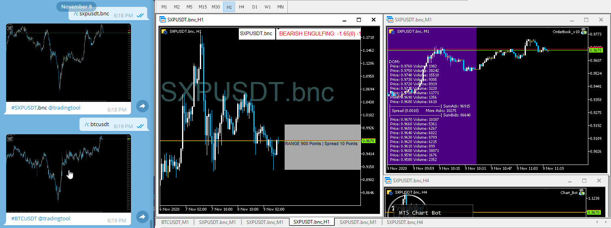

TradingToolCrypto
TradingToolCrypto
Basic Package
Don't let the name fool you. The basic package is packed with many different trading tools from VWAP, ADR, TDI indicators to Telegram trade copiers and anything in between. The Basic package continues to expand with new trading tools on a regular basis.
The Basic package is a pro-rated monthly fee of $20, payable in 20+ different crypto coins. Activation of your personal license is completed within MetaTrader by using our proprietary Payment Bot. All you have to do is download the software, generate and pay the invoice. The software license is activated after the payment is confirmed by CoinPayments.net Merchant. You'll have full access to all the Basic trading tools until the end of the month.
Basic Package
Robots
| Name | Description | Type |
|---|---|---|
| Chart Bot | Use telegram to fetch market price and charts real-time. | Utility |
| Chart Looper | Loop through your opened charts automatically without clicking the mouse. | Utility |
| Close At Breakeven | The perfect tool to close your basket of positions at breakeven + (your profit goal). | Close Positions |
| Close At Profit | Close any position at a preset profit in points or base currency. | Close Positions |
| Equity Protection | Protect your account with equity protection. Set a maximum drawdown limit on your account. | Close Positions |
| Grid Bot | Open Source Logic - Layer limit orders - Dollar Cost Average - Endless Configurations | Open Positions |
| Market Scanner | Heat Map for all your symbols within MarketWatch - Click the symbol button to open chart | Market Sentiment |
| OrderBook | Sum up all Bids and Asks to compare the order depth quickly - | Market Sentiment |
| Telegram Alerts | When positions are opened-closed-modified send the actions to your telegram channel or group | Utility |
| TradingView Lines | Calculates your position size based on the Risk/Reward lines you adjust on the chart. | Open/Close Positions |
| Trailing Stops | Lock in profit and adjust the stoploss automatically based on your trailing parameters. | Close Positions |
Indicators
| Name | Description | Type |
|---|---|---|
| ADR | ADR indicator plots support and resistance levels on any timeframe base on your desired parameters | Visual |
| Bar Patterns | Scans for Inside Bar and Engulfing Bars on the Daily Timeframe with percentage changes | Visual |
| Bar Spread | Builds a histogram chart to showcase the real-time spread statistics within the bars | Visual |
| Chart Symbol | Creates a text object on the chart with the Symbol Name. Text Size adjusts automatically based on the window size | Visual |
| Exchange Liquidity | Builds a histogram chart to showcase the difference in bid vs ask quantity size | Visual |
| Exchange Plot Price | Builds a line graph chart to compare different exchange prices real-time | Visual |
| Fitness | Draws all the High Low (day,weekly,monthly) values on the right side of the chart including the daily range size | Visual |
| High Low Monthly | Shows the Monthly High Low on the chart with a horizontal line | Visual |
| High Low Weekly | Shows the Weekly High Low on the chart with a horizontal line | Visual |
| High Low Day | Shows yesterday's High Low on the chart with a horizontal line | Visual |
| Median Channel | Shows the High Low Range and median price on the chart with adjustable bar lookback | Visual |
| Sub Window | Opens an indicator window to display objects from the CryptoBridge GUI | Visual |
| Trader's Dynamic Index (TDI) | Several Volatility and oscillator indicators packed into one indicator for easy monentum and over bought/sold levels | Visual |
| Trend Volume | Builds a histogram chart to showcase the real/tick volume oscillations | Visual |
| Value in Chaos | Finds imbalances in price action to showcase support and resistance levels also known as institional liquidity interest levels. | Visual |
| Volume Histogram | Builds a histogram chart to showcase the real/tick volume | Visual |
| VWAP Daily | Volume Weighted Average Price based on daily price action with 4 deviation bands | Visual |